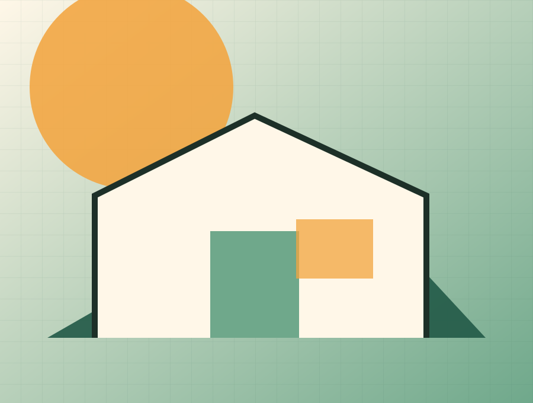

Oldalösszefoglaló
Érthető információ: CSOK, hitel, önerő, havi törlesztő. Egyszerű kalkulátor. "Gyakran feltett kérdések" blokkok. CTA: "Kérj pénzügyi tanácsot".
Közérthető, barátságos és független segítség az építési döntésekhez. A finanszírozás oldal célja, hogy a látogató egyértelmű szempontokkal jusson el a következő megalapozott döntésig.
BauFreund. Az építő barát.
Drive-forráshoz igazított tesztoldal · publikálás nélkül
Közérthető, barátságos és független segítség az építési döntésekhez.
Érthető információ: CSOK, hitel, önerő, havi törlesztő. Egyszerű kalkulátor. "Gyakran feltett kérdések" blokkok. CTA: "Kérj pénzügyi tanácsot".
A preview nem küld adatot és nem tesz ajánlatot. Ár, határidő, garancia vagy szerződéses vállalás csak jóváhagyott evidence- és ajánlati rekord alapján jelenhet meg élesben.